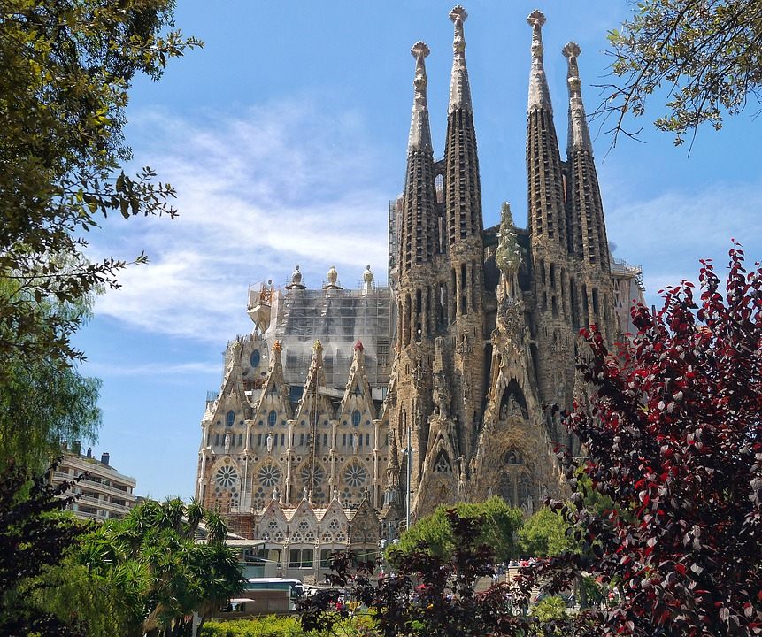
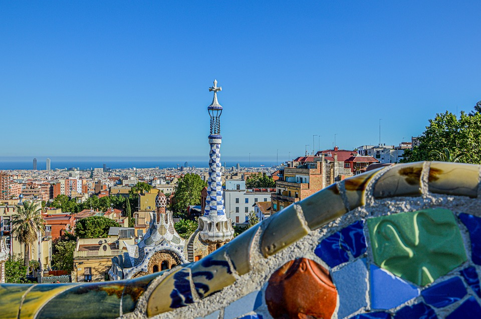
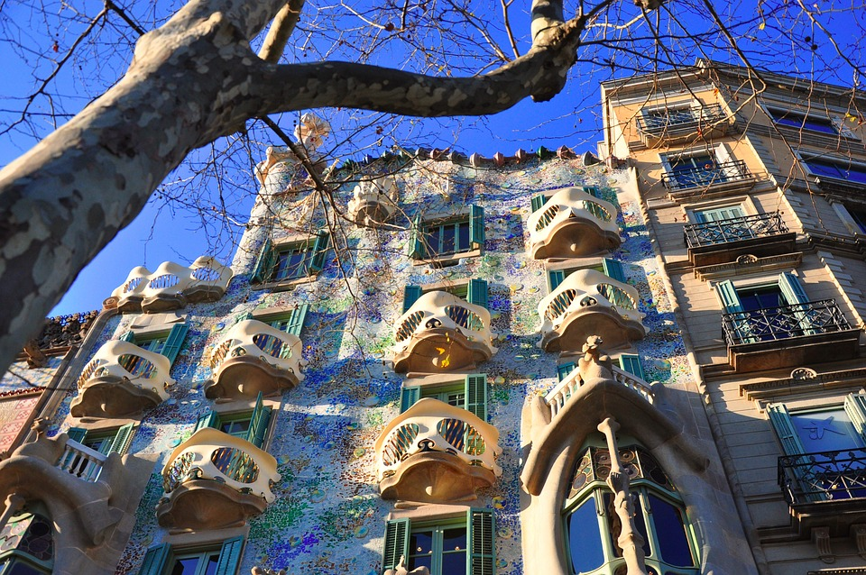

Barcelona is one of the most important and famous citys in Europe, as in the country it is located, Spain. In this page you will learn about his most iconic and historic monuments, from cathedrals to parks, stadiums, hospitals and markets.
Sagrada Familia is the most iconic monument of Barcelona and one of the most extravagant of this city. The construction started in 1882 and in 1883 the project was redirected to the historical artist Gaudí, who completely redesigned the cathedral. He designed it with 18 towers, but he could build only one before his dead in 1926. Nowadays it has 8 towers and it's still being builded by artists with donations and visits money.
Sagrada Familia
Parque Güell is the most famous park in Barcelona with his extravagant and colorfoul views. Its name come from its creator, Eusebi Güell, a rich businessman and big fan of Gaudí who wanted to build a group of luxurious properties, but with time it became a park with the visuals of a dream. The park was inaugured in 1922 and became one of the most important and turistic monuments of Barcelona. It has a length of 17 hectares and is full of wavy shapes, columns that look like trees and figures of animals or simply geometry.
Parque Güell
Casa Batlló is the masterpiece of Gaudí being the key piece of the modernist arquitecture. It was built in demand of Josep Batlló in the center of Barcelona so it could be seen and visited very esaily by everybody. It is an extravagant building where you can see the fantastic and amazing universe of Gaudí and the old resindence of the Batlló family. Once inside you can go throw its curious nooks like the garden or the roof with its mystical fireplaces.
Casa Batlló
All of this photos on this page is free of copyright and can be used by everybody with no paybacks.